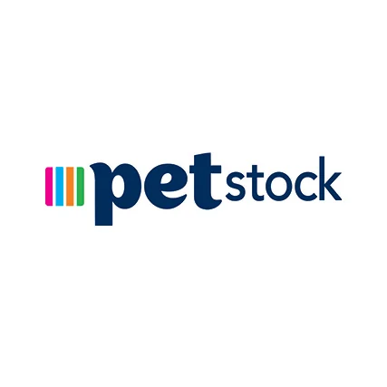
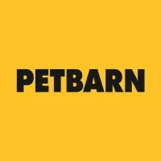
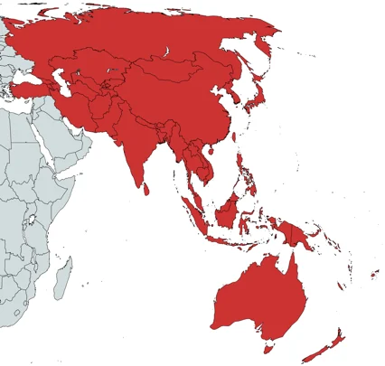

Executive summary
This section is not assessed or included in the word count
ThermaPet is an Australian pet technology business developed to address the increasing risk of heat-related illness in dogs and cats during hot weather. Influenced by research into ERM and KPMG, the business provides a sustainable smart harness that monitors an animal’s temperature and connects to a mobile application, allowing owners to receive alerts about their pet’s condition. By providing owners with timely information, ThermaPet aims to reduce the risk of heat stress and heat stroke while reducing the anxiety associated with leaving pets during hot Australian conditions.
The business has developed its product through design thinking, business tools (Get, Keep, Grow cycle, SWOT analysis, PESTLE analysis) and continuous refinement of the value proposition. The concept of a temperature-detecting harness was developed into a sustainable smart harness using bamboo leather and recycled plastics influenced by conversations with a sustainability company, ERM and further research. This differentiation provides ThermaPet with a competitive advantage by combining animal safety, technology and environmental responsibility. The target market has also expanded from dog owners to include cat owners, increasing the customer segment while maintaining a strong focus on general pet welfare. ThermaPet will generate revenue through two complementary streams: direct sales of the smart harness and a subscription model for enhanced mobile app features following research into the benefits of doing so. Core temperature monitoring and alerts will remain accessible for customers, while premium features such as predictive insights, historical data and personalisation will be offered through paid subscription. These models provide an initial source of revenue from product sales while creating the potential for recurring income and long-term customer relationships.
Marketing and distribution will have a strong focus on social media, particularly Instagram, alongside partnerships with pet retailers and veterinarian clinics. Instagram has been well researched and supports brand awareness making it suitable for use. Instagram will demonstrate the benefits of the product and preview premium application features, while pet retailers will provide customers with a physical channel through which they can discover and purchase the ThermaPet smart harness. The business will establish partnerships with sustainable material suppliers, legal professionals and cybersecurity specialists to support responsible and secure operations.
Several risks have been identified and explored through insightful business intelligence, strategic analysis, and research. Cybersecurity is a significant concern. The harness relies on an app and connected temperature-monitoring technology. ThermaPet will therefore prioritise cybersecurity expertise and regular technology updates to protect customer information and trust, which are important factors in maintaining customer relationships and therefore revenue. Legal and ethical risks will be addressed through partnerships as research into the Australian Taxation Office emphasised the benefit in consulting professions. Discussion with a former Adelaide Zoo worker highlighted the risks associated with customers having the false belief it is safe to leave their pet outside if they have a temperature sensing harness on. To ensure this does not occur, a paper handbook provided with purchase will provide guidance for how to use the app and will explain correct product use and emphasise that temperature monitoring does not make it safe to leave pets in dangerous heat or on surfaces that may burn their paws. ThermaPet aims to establish a trusted pet technology brand that reduces the risk of heat-related illness, provides owners with greater peace of mind and achieves sustainable long-term business growth.
Vision
A customer interview with an owner of two French bulldogs stated, “we need more solutions for monitoring pets during heat waves” influencing the creation of ThermaPet. ThermaPet will develop into a trusted Australian pet temperature detecting harness brand. The brand was originally designed for dog owners, but a survey on the platform ‘Survey Monkey’ discovered cat owners could benefit from the product, so the target demographic was expanded (Survey Monkey, 2024).
Purpose
Our purpose is to give pet owners greater confidence during increasingly frequent hot weather events through us innovate technology which provides accessible, live information regarding the animal’s temperature status.
Values
Animal welfare, sustainability, customer wellbeing, accessibility, and responsibility remain ThermaPet’s core values.
Product
ThermaPet’s product is a sustainable temperature detecting pet harness. Research into ‘Wiringo’, an electrical firm established a temperature sensor could be embedded within the harness and communicate to a mobile app influencing my decision to do so (Wiringo, 2023). This integration of technology allows pet owners to receive alerts when concerning temperature fluctuations occur differentiating our harness from others on the market. Responding to the challenge of making the product accessible for a wide range of individuals, a handbook on how to navigate the app will be included with purchase. This addition is feasible and better suits the needs of older Australians in the digital age, as confirmed by an eye-opening interview with an 89-year-old who stated “I am worried about how to install apps”.
Value proposition
ThermaPet’s value proposition is to always prioritise pet safety, owner peace of mind, and sustainability into our operations.
Registration details
Business name: ThermaPet
Business structure: Sole trader
ABN: 23856702176
ACN: 496264961
Registered business address: Swifts Creek East Rd, Victoria, 3896
Location and outlets
Australia is a stable, high-income market with a fast set up process and strong trade links to the Asia-Pacific region shaping my decision to complete my business startup in the country and expand to the international market in the future (Acclime Australia, 2022). Beginning product-development operations in Victoria is likely to be effective as the location is a major national hub; however, long term viability depends on whether the business can meet customer demand when brand awareness rises. The product will be sold through an online platform and the selected Australian pet retailers ‘PetBarn’ and ‘PetStock’ expanding market reach and increasing accessibility for customers (PetStock Australia and PetBarn Australia, 2021). Research evaluated over 2 million businesses currently connect with customers through Instagram. I was influenced by this data to use the platform for ThermaPet, supporting customer awareness and increasing online sales as business startups carry risks including lack of brand recognition (Instagram, 2026).



Structure and ownership
Guided by research into the Australian Taxation Office, a ‘Pty Ltd’ structure could provide opportunity for legal separation between ThermaPet and the owners, supporting our future investment and expansion (Legal Vision, 2026). Another beneficial conversion with a legal firm owner into the risks of a partnership business model guided my judgement for ThermaPet to operate as a sole trader (Hume Taylor and Co, 2022).
Operations
Sourcing supplies sustainably is crucial to the integrity of ThermaPet as verified by a constructive conversation with an Environmental Social Governance professional at ‘ERM’ where they stated, “sustainable sourcing can help businesses mitigate risks related to new government environmental regulations and laws”. The Recycled Plastics Australia website was a useful tool in showing that recycled plastics are easily collected, sorted, cleaned, and used in products (RPAU, 2026). The Sustainability Award Organisation additionally revealed bamboo is not costly and naturally biodegradable, guiding me to implement it into the products material component. This upholds to ThermaPet’s value proposition, increasing its desirability to customers, and minimising our costs of goods sold (RPAU, 2026). However, a limitation to consider is the research does not fully account for processing and transportation costs which may increase production expenses. Warehousing and inventory systems will be required for the business start-up for supply storage and efficient manufacturing, maximising working time and capital. Research concludes Instagram has over 3 billion monthly active users worldwide, making it reasonable to decide on marketing Thermapet through the platform (Instagram, 2020). Customers will interact with the business through our website, pet retailers, and veterinarians nationwide enhancing our brand recognition. Although this may expand market reach, selling the product through these stores is not guaranteed and may require retailer margins that reduce profitability.
Risk management
An effective resource, Harvard Business School stated that “effective risk management is crucial to long term business success” highlighting the need to consider this in ThermaPet (Harvard Business School, 2023). Research into Queensland Business highlighted that financial risks in business startup include limited cashflow, loans being unapproved, and fluctuating rates from suppliers. Legal risks include having a lack of knowledge for understanding contracts and lease agreements, a failure to get the correct business licences, and not handling customer information correctly to ensure privacy obligations are met. These present the greatest threats. Research into these risks identified a lawyer and accountant should be hired for the success of ThermaPet. Competitor risks identified included having too many competitors in the business location, to ensure this does not occur, the location of Victoria was chosen because it has a high rate of pet ownership, strong retail access and fewer direct competitors compared with alternative locations. However, while this mitigates the risk, if customers cannot easily access this location or the pet stores that supply the product, there is a risk of insufficient sales and therefore capital. KPMG states that “the Australian Cyber Security Centre received over 84,000 cybercrime reports, with an average reportable cost of $97,200 per report for medium-sized businesses”. NCSC NZ additionally states “social media applications have third party access to information that is on the devices associated with the social media account” revealing that while marketing on Instagram may be beneficial to ThermaPet’s brand awareness, it also poses risks, and an IT expert should be consulted to minimise these.
Intellectual property protection
It is crucial for ThermaPet to not share any product or branding ideas before the IP is registered as it can prevent ownership from being claimed. As infringements and issues can arise from not registering a business’s IP correctly a legal expert will be hired as mentioned previously who will provide guidance on intellectual property protection.
Legal considerations and insurance requirements
Establishing a successful enterprise requires navigating complex legal requirements and considerations. Fair trading laws must be understood so the business operates fairly while informing and protecting customers. ThermaPet will comply with Australian tax laws including GST, PAYG, and land tax for the site where operations will be conducted. Employment law additionally states ThermaPet must ensure employees are paid correct wages, work health and safety laws are abided by, and superannuation requirements are met (Wadlow Solicitors, 2024). As a sole trader, ThermaPet is legally responsible for all aspects of the business, including debts and losses which may incur in its running (Australian Taxation Office, 2023). This decision was made as partnership business structures can carry additional risks as the law generally treats the partners as personally responsible for the business’s debts and obligations (Sprintlaw, 2025). Workers compensation insurance is the only business insurance legally required in Australia (Xero, 2026). It is mandatory ThermaPet complies with this as employees such as product developers, lawyers, and IT experts will be employed in the business startup.
Sustainability impacts
A problem identified was ensuring the harness design remains environmentally responsible as materials could contribute to plastic waste, contradicting the businesses sustainability claims. As confirmed by my analysis of the business ERM, sustainability is a competitive advantage and will allow for long term growth (ERM, 2019). In response, ThermaPet’s product design was created around using bamboo leather and recycled plastics which may additionally strengthen stakeholder trust. Cutting emissions and improving efficiency across all operations is important and will be completed through ThermaPet offering hybrid working options for employees. We will primarily be sourcing from suppliers who share these values my conversation with an ESG worker and research into the RPAU guided my decision to do so.
The market
My sales and marketing decisions were guided by reliable primary and secondary research. The pet industry association has stated that on average, owners spend approximately $3,00 per dog and $2,100 per cat, highlighting the growing trend of individuals treating pets with the same care as family members. This rise in ‘human-style’ pet care reflects a shift in how Australians value their animals, which is highly advantageous for the business (Pet Industry Association, 2021). 35% of pet owners purchase their pet supplies and products online, a leap from 20% in 2019 (Health for Animals, 2022). This critical data reinforces that majority of the harnesses should be marketed and sold online. However, I identified the significant barrier of older Australians being less confident in online shopping. In response, products are also being sold in veterinarian clinics and selected retail stores increasing accessibility and sales. In the future, ThermaPet’s customer segments should not only be derived from Australia, but internationally also when there is domestic stability as advised by an ESG worker in a beneficial conservation. Sales are expected to benefit from this and so will capital. Current customer segments include dog owners, cat owners, and pet shelter organisations like the RSPCA who seek to find solutions to pet heat stroke during hot summer environments (RSPCA South Australia, 2026). Key competitors include FitBark and Fi, companies offering smart dog collars with GPS tracking (FitBark and Fi, 2025). However, after analysis, they do not include ThermaPet’s main feature, the temperature detection and alerts meaning there is differentiation and competitive advantage.
The strategy
Key performance indicators (KPI) are a measurement on the efficiency of a business’s activities in achieving purposes. Following my insightful conversation with an ESG worker at ERM, appropriate key performance indicators, short term, and long-term targets were set for the business:
| Measure | Target |
|---|---|
| Annual sales revenue | $150,000 by Year 2 |
| Annual sales revenue | $500,000 by Year 5 |
| Net profit margin | 10% by Year 2; 20% by Year 5 |
| Annual revenue growth | Minimum 20% per year after Year 2 |
| Customer satisfaction | Over 90% positive ratings through app |
| Customer retention | Over 70% annually (app subscriptions) |
| Product reliability | Over 95% successful temperature readings |
| Market share | 2% of Australia’s smart pet wearable market by Year 5 |
| Retail distribution | 20 Australian retail locations by Year 2; 100 by Year 5 |
| Sustainability | Over 80% of harness materials sourced from recycled or renewable materials |
The finance
| Start-up requirement | Estimated cost |
|---|---|
| Product research/development | $15,000 |
| Temperature-sensing technology and app development | $20,000 |
| Initial inventory and manufacturing | $25,000 |
| Website and e-commerce platform | $5,000 |
| Marketing and promotion | $10,000 |
| Legal and IP registration | $5,000 |
| Warehouse/equipment set up | $8,000 |
| Insurance and compliance | $2,000 |
| Working capital/cash reserve | $10,000 |
| Total funding requirement | $100,000 |
| Line | Year 1 | Year 2 | Year 3 |
|---|---|---|---|
| Harness sold | 600 | 1,000 | 1,750 |
| Sales revenue | $90,000 | $150,000 | $262,500 |
| Cost of goods sold | $42,000 | $80,000 | $140,000 |
| Gross profit | $48,000 | $80,000 | $140,000 |
| Operating expenses | $65,000 | $65,000 | $85,000 |
| Net profit/loss | -$17,000 | $15,000 | $55,000 |
**Assumption that each harness is sold for $150, with an average variable cost of $70 per harness
Cash flow
| Line | Year 1 | Year 2 | Year 3 |
|---|---|---|---|
| Opening cash | $10,000 | $13,000 | $28,000 |
| Cash inflows from sales | $90,000 | $150,000 | $262,500 |
| Operating and production outflows | -$87,000 | -$135,000 | -$207,500 |
| Closing cash balance | $13,000 | $28,000 | $83,000 |
| Line | Year 1 | Year 2 | Year 3 |
|---|---|---|---|
| Sales revenue | $90,000 | $150,000 | $262,500 |
| Less: COGS | ($42,000) | ($70,000) | ($122,500) |
| Gross profit | $48,000 | $80,000 | $140,000 |
| Marketing | ($15,000) | ($12,000) | ($15,000) |
| Wages/contractors | ($20,000) | ($25,000) | ($35,000) |
| Rent/warehouse | ($8,000) | ($8,000) | ($10,000) |
| Technology/app | ($10,000) | ($7,000) | ($8,000) |
| Insurance/legal/admin | ($7,000) | ($6,000) | ($7,000) |
| Other operating expenses | ($5,000) | ($7,000) | ($10,000) |
| Net profit/(loss) | -$17,000 | $15,000 | $55,000 |
| Net profit margin | -18.9% | 10.0% | 21.0% |
| Assets | $ |
|---|---|
| Cash | $28,000 |
| Inventory | $25,000 |
| Equipment | $30,000 |
| Technology/IP | $20,000 |
| Total assets | $103,000 |
| Liabilities & Equity | $ |
|---|---|
| Business loan | $40,000 |
| Accounts payable | $8,000 |
| Total liabilities | $48,000 |
| Owner's equity | $40,000 |
| Retained profit | $15,000 |
| Total equity | $55,000 |
| Total liabilities + equity | $103,000 |